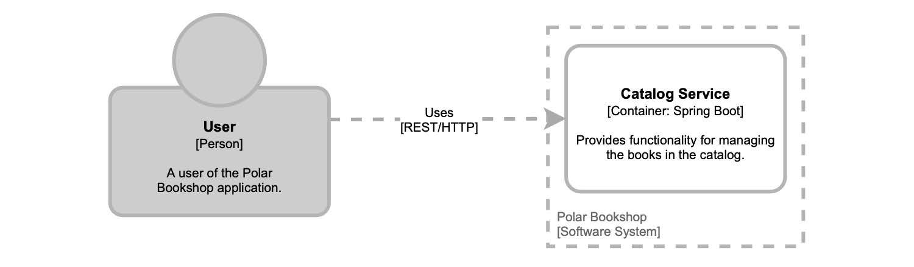
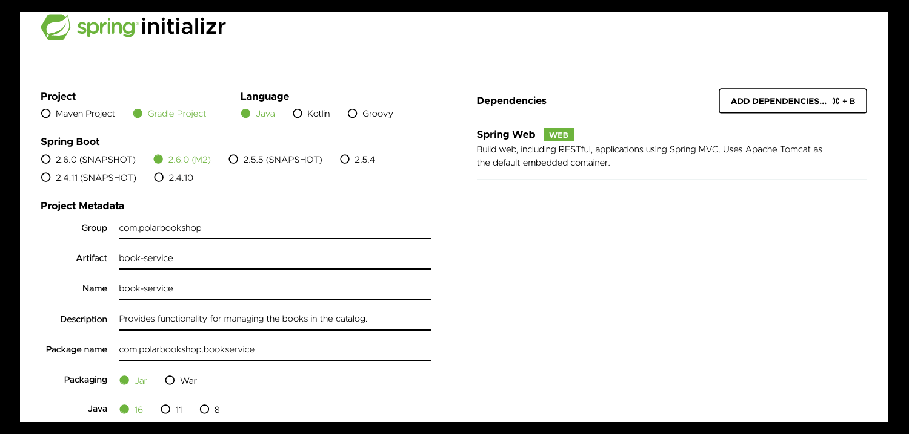
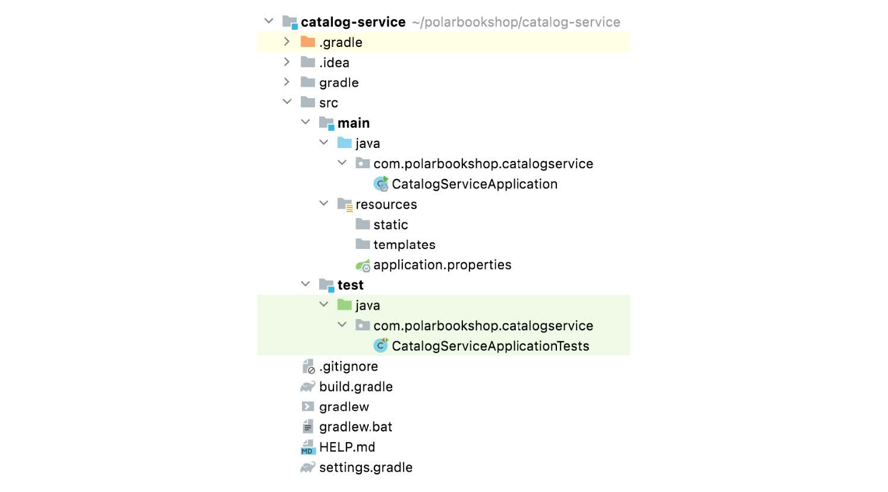
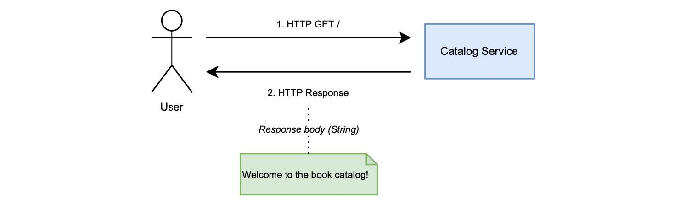
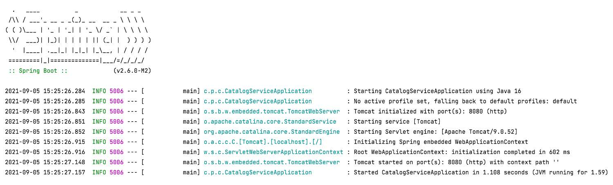

2.2.2 创建 Spring Boot 应用
假设您为 Polarsophia 构建一个 极地书店 应用程序。该组织管理着一家特殊的书店，希望出售有关北极的书籍。正在考虑采用云原生方法。
作为一个试点项目，您的老板指派您向同事演示，如何在云中开发及部署。要求您构建的 web 应用程序是一个 目录服务（Catalog Service），目前只有一个职责：欢迎用户访问图书目录。
这个试点项目，将为构建出成功并受到好评的云原生应用打下基础。
考虑到任务的目标，您可能会决定将应用程序实现为 RESTful 服务，使用一个 HTTP 端点负责返回欢迎消息。毫无疑问的是，您选择采用 Spring 作为服务（目录服务）的主要技术栈。系统的体系结构如图 2.2 所示。在接下来的部分，您将尝试构建和部署应用程序。

图 2.2 遵循 C4 模型的 极地书店 应用程序的体系结构图。
在图 2.2 中，您可以看到一些体系结构符号，这些符号将会贯穿本书。这些符号遵循 Simon Brown 创建的 C4 模型。为描述 极地书店 项目，模型中有三个抽象：
- 人。代表软件系统的一个人类用户。在我们的示例中，它是书店的顾客。
- 系统。它代表您为向用户提供价值而构建的整体应用程序。在这里表示，
极地书店系统。 - 容器。它表示应用程序或数据的服务。不要与 Docker 混淆了。在我们的示例中，它是 Catalog Service。
译者注：C4表示上下文（Context）、容器（Container）、组件（Component）和代码（Code）
对于此任务，您可以使用 Spring 框架和 Spring Boot 执行以下操作：
- 声明实现应用程序所需的依赖项；
- 使用 Spring Boot 引导应用程序；
- 实现控制器以公开用于返回欢迎消息的 HTTP 端点；
- 运行并使用应用程序。
本书中的所有示例都基于 Java 17，因此您需要安装 OpenJDK 17。我将使用来自 Adoptium 项目（adoptium.net）的 Eclipse Temurin，以前称为 AdoptOpenJDK。您可以选择其他合适的版本。
注意：在您的计算机上管理不同的 Java 发行版可能会很困难。我建议使用 SDKMAN（sdkman.io）这样的工具轻松安装、更新，并在不同的 JDK 之间进行切换。
初始化项目
在本书中，我们将构建几个云原生应用程序。我建议您为每个应用建立一个 Git 存储库，并在 GitHub 进行存储。在下一章中，我将更多地讨论如何管理代码库的内容。现在，请创建一个 catalog-service 的 Git 存储库。
然后，您可以使用 Spring Initializr （start.Spring.io）生成项目，并将其存储在刚刚创建的 catalog-service Git 存储库中。Spring Initializr 是一个方便使用的服务，可以从浏览器或通过其 REST API 进行访问，以生成基于 JVM 的工程。它甚至集成进了流行的 IDE 中，如 IntelliJ IDEA、Visual Studio Code 和 Eclipse。初始化 Catalog Service 的参数如图 2.3 所示。

图 2.3 从Spring Initializr 初始化 Catalog Service 项目的参数。
在初始化过程中，您可以提供有关要构建的应用程序的一些详细信息，如表 2.1 所示。
表 2.1 使用 Spring Initializr 生成项目时，可配置的主要参数。
| 参数 | 描述 | Catalog Service 服务所用值 |
|---|---|---|
| Project | 您可以使用 Gradle 或 Maven 作为项目的构建工具。这本书中所有的例子都将使用 Gradle。 | Gradle |
| Language | Spring 支持三种主要的 JVM 语言：Java、Kotlin、Groovy。本书中的所有示例都将使用 Java。 | Java |
| Spring Boot | 您可以选择要安装的 Spring Boot 版本。本书中的所有示例都将使用 Spring Boot 2.6.0-RC1，但任何 2.6+ 版本都应可以。 | Spring Boot 2.6.0-RC1 |
| Group | 项目的组 ID，在 Maven 存储库中使用。 | com.polarbookshop.catalogservice |
| Artifact | 项目的工件 ID，在 Maven 存储库中使用。 | catalog-service |
| Name | 工程名称。 | catalog-service |
| Package name | 项目的基本 Java 包。 | com.polarbookshop.catalogservice |
| Packaging | 如何打包项目：WAR（用于在应用服务器上部署）或 JAR（用于独立应用程序）。云原生应用程序应该打包为 JAR，所以 |
本书中的示例将使用该选项。 | JAR | | Java | 要用于构建项目的 Java 版本。本书中的所有示例都将使用 Java 17。 | 17 | | Dependencies | 要包含在项目中的依赖项。 | Spring Web |
新生成项目的结构如图 2.4 所示。在接下来的部分，我带领您一步步操作。

图 2.4 从Spring Initializr 生成的新 Spring Boot 项目的结构。
在本书附带的代码存储库中（github.com/ThomasVitale/cloud-native-spring-In-action），对于每一章都可以找到 begin 和 end 文件夹。您都可以从与我相同的设置开始，并检查最终结果。例如，您当前正在阅读第 2 章，因此您将在 Chapter02/02-begin 和 Chapter02/02-end 中找到相关代码。
注意：在本章的 begin 文件夹中，您可以找到在终端窗口中运行的命令，该窗口下载一个 zip 文件，其中包含您需要下载的所有代码。而无需通过 Spring Initializr 手动生成。
Gradle 或 Maven?？
在本书中，我使用的是 Gradle，但您也可以使用 Maven。在本书附带的代码存储库中，您可以找到一个 Gradle 命令映射表，以便在使用 Maven 时使用（github.com/ThomasVitale/cloudnativespring-in-action）。每个项目有不同的需求，这可能导致您选择某个构建工具。
我选择使用 Gradle 主要有两个原因。使用 Gradle 构建和测试 Java 项目比使用 Maven 要花费更少的时间，这得益于其增量和并行构建以及缓存。此外，我发现 Gradle 构建语言（Gradle DSL）更具可读性，也比 Maven XML 更具表现力和可维护性。在 Spring 的生态系统中，您既可以找到使用 Gradle 的项目，也可以找到使用 Maven 的项目。它们都有各自的拥挤者。我建议您可以都尝试一下，然后再选择让您的生产率更高的那个。
探索构建配置
让我们首先打开您刚刚初始化的项目，并查看 Gradle 构建出来的 Catalog Service 应用程序的配置，这是在 build.gradle 文件中定义的。您可以在那里找到您提供给 Spring Initializr 的所有信息。
清单 2.1 Catalog Service 项目的构建配置（build.gradle）
plugins {
id 'org.springframework.boot' version '2.6.0-RC1' ❶
id 'io.spring.dependency-management' version '1.0.11.RELEASE' ❷
id 'java' ❸
}
group = 'com.polarbookshop' ❹
version = '0.0.1-SNAPSHOT' ❺
sourceCompatibility = '17' ❻
repositories { ❼
mavenCentral()
maven { url 'https://repo.spring.io/milestone' }
}
dependencies {
implementation 'org.springframework.boot:spring-boot-starter-web' ❽
testImplementation 'org.springframework.boot:spring-boot-starter-test' ❾
}
test {
useJUnitPlatform() ❿
}
❶ 在 Gradle 中提供 Spring Boot 支持，并声明您想要的版本
❷ 为 Spring 提供依赖项管理功能。
❸ 在 Gradle 中提供 Java 支持，设置任务以编译、构建和测试应用
❹ Catalog Service 项目的组 ID。
❺ 应用程序的版本。默认情况下为 0.0.1-SNAPSHOT。
❻ 用于构建项目的 Java 版本。
❼ 工件存储库，指定搜索依赖项的位置。
❽ 提供使用 Spring MVC 构建 web 应用程序所需的库，引入 Tomcat 作为默认的嵌入式服务器。
❾ 提供多个库和实用程序来测试应用程序，包括 Spring Test、JUnit 和 Mockito。自动包含在每个 Spring Boot 项目中。
❿ 支持使用 JUnit5 提供的 JUnit 平台进行测试。
项目名称在名为 settings.gradle 的第二个文件中定义。
rootProject.name = 'catalog-service'
Spring Boot 提供了方便的 starter 依赖项，特定用例所必需的库都捆绑在了一起，此功能显著简化了构建配置。这个项目使用的主要依赖项是 org.springframework.boot:spring-boot-starter-web，在 Spring Initializr 中名为 Spring Web。此 starter 用于构建 web 应用程序，包括构建具有 RESTful 服务的功能，并引入 Apache Tomcat 作为默认的嵌入式服务器。
引导应用程序
在上一节中，您初始化了 Catalog Service 项目并选择了 JAR 打包选项。任何打包为 JAR 的 Java 应用程序都必须具有 public static void main(String[] args) 方法，以在启动时执行。Spring Boot 也不例外。在 Catalog Service 里，您有了一个 CatalogServiceApplication 类，该类是在初始化时自动生成的：类中定义了 main() 方法，也是 Spring Boot 应用程序的入口点。
清单 2.2 Catalog Service 的引导类（CatalogServiceApplication.java）
package com.polarbookshop.catalogservice;
import org.springframework.boot.SpringApplication;
import org.springframework.boot.autoconfigure.SpringBootApplication;
@SpringBootApplication ❶
public class CatalogServiceApplication {
public static void main(String[] args) { ❷
SpringApplication.run(CatalogServiceApplication.class, args); ❸
}
}
❶ 定义 Spring 配置类，触发组件扫描和 Spring Boot 自动配置。
❷ 用于启动应用程序的方法。
❸ 注册要在应用程序引导阶段运行的当前类。
@SpringBootApplication 注解是包含三种不同注解的快捷方式：
@Configuration将该类标记为 bean 定义源。@ComponentScan启动组件扫描，能够在 Spring 上下文中自动查找和注册 bean。@EnableAutoConfiguration启用由 Spring Boot 提供的自动配置功能。
Spring Boot 自动配置会根据多种情况被触发，例如：类路径中是否存在某些类、特定 bean 的存在或某些类的属性值。由于 Catalog Service 项目依赖于 spring-boot-starter-web，所以 Spring Boot 将初始化嵌入式 Tomcat 服务器实例并应用最小配置，在几乎零时间内启动并运行 web 应用程序。
应用程序的设置就是这样。让我们继续为 Catalog Service 开发 HTTP 端点。
实现控制器
到目前为止，我们已经了解了由 Spring Initializr 生成的项目。是时候开发一些应用程序的业务逻辑了。Catalog Service 将公开 HTTP 端点并返回欢迎信息。这可以在 REST 控制器中为其定义一个处理程序。它将是一个 GET 端点，向用户返回一条欢迎消息，欢迎用户访问图书目录。图 2.5 显示了交互流程。
 图 2.5 用户和应用程序之间的交互，由 Catalog Service 公开的 HTTP 端点返回欢迎消息。
在 Catalog Service 项目中，创建一个新的 HomeController 类并实现一个方法，负责处理对根路径（/）的 GET 请求。
清单 2.3 定义一个 GET 端点以返回欢迎消息（HomeController.java）
package com.polarbookshop.catalogservice;
import org.springframework.web.bind.annotation.GetMapping;
import org.springframework.web.bind.annotation.RestController;
@RestController ❶
public class HomeController {
@GetMapping("/") ❷
public String getGreeting() {
return "Welcome to the book catalog!";
}
}
❶ 定义处理程序的类，标识为 REST 端点。
❷ 处理对根路径的 GET 请求。
@RestController 注解将类标识为处理传入的 HTTP 请求。使用 @GetMapping 注解，可以将 getGreeting() 方法标记为：到达根路径 （/） GET 请求的处理程序。对该端点的任何 GET 请求都将用这个方法进行处理。在下一章中，我将更详细介绍如何使用 Spring。
测试应用程序
从 Spring Initializr 创建 Spring 项目时，包含基本的测试设置。在 build.gradle 文件中，自动添加了测试 Spring 所需的依赖项。此外，还自动生成一个测试类。让我们来看看自动生成的 CatalogServiceApplicationTests 类是什么样的。
清单 2.4 验证 Spring 上下文的自动生成的测试类（CatalogServiceApplicationTests.class）
package com.polarbookshop.catalogservice;
import org.junit.jupiter.api.Test;
import org.springframework.boot.test.context.SpringBootTest;
@SpringBootTest ❶
class CatalogServiceApplicationTests {
@Test ❷
void contextLoads() { ❸
}
}
❶ 提供用于测试 Spring Boot 应用程序的设置。
❷ 标识一个测试用例。
❸ 用于验证应用程序上下文是否正确加载的空测试。
默认测试类由 `@SpringBootTest 注解标识，该注解提供了许多测试 Spring Boot 应用程序的有用功能。在整本书中，我会更多介绍它们。现在，只需知道它加载了一个完整的 Spring 应用程序上下文就可以了。这里只有一个测试用例，而且是空的：它用于验证 Spring 上下文是否已正确加载。
打开终端窗口，导航到应用程序根文件夹（catalog-service），然后运行 Gradle 任务 test，来执行应用程序测试。
$ ./gradlew test
任务应该是成功的，测试是绿色的，这意味着 Spring 应用程序可以启动，没有错误。但 HTTP 端点呢？让我们来看一看。
运行应用程序
您已经完成了应用程序的创建，因此可以运行它了。有很多不同的方法可以运行应用程序，稍后我将向您展示其中的一些方法。现在，您可以使用 Spring Boot Gradle 插件提供的 bootRun。
在启动测试的同一终端窗口中，运行以下命令：
$ ./gradlew bootRun
几秒钟后，应用程序应该启动并开始运行，并准备好接受请求。在图 2.6 中，您可以看到启动阶段的日志。
 图 2.6 Catalog Service 应用程序的启动日志。
图 2.6 中的日志中，您可能注意到启动阶段由两个主要步骤组成：
- 初始化和运行嵌入式 Tomcat 服务器（默认情况下，侦听端口 8080）；
- Spring 应用程序上下文的初始化和运行。
现在，您可以验证 HTTP 端点是否按预期工作了。打开浏览器窗口，访问 localhost:8080/ 并准备好接收本书的欢迎目录吧。
Welcome to the book catalog!
极地书店 应用程序的开发部分已经完成：您有了一个 Catalog Service 欢迎用户使用图书目录。记住终止 bootRun 进程可以使用 Ctrl+C 以停止应用程序的执行。
下一步是将应用程序部署到云中。要使其在任何云基础设施上都可运行，您应该首先将其容器化。下面我们讲 Docker。